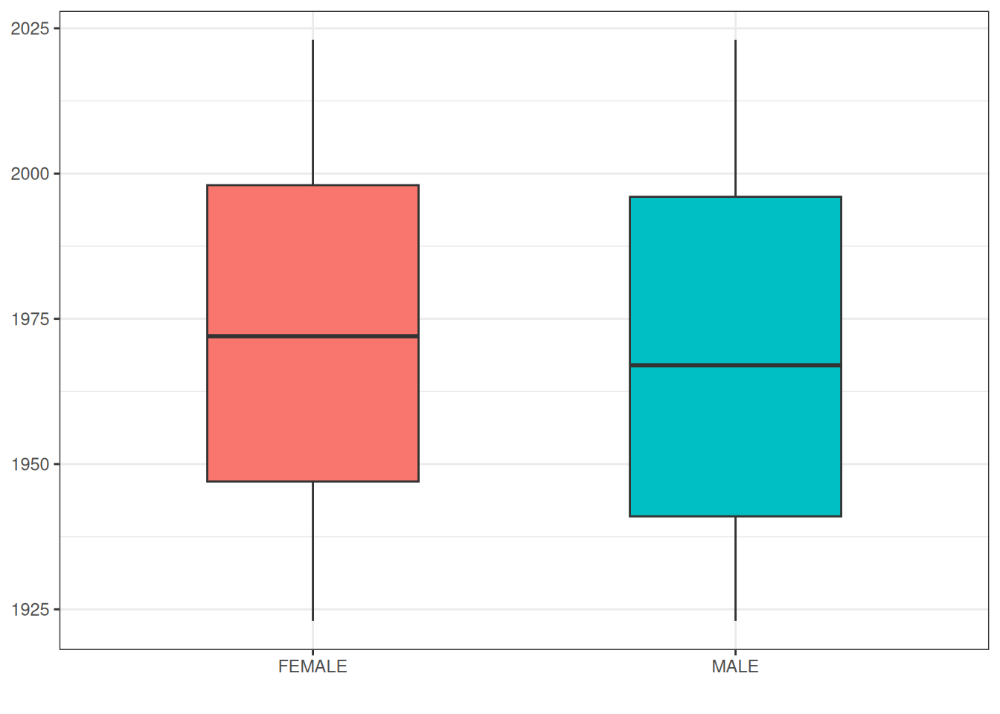
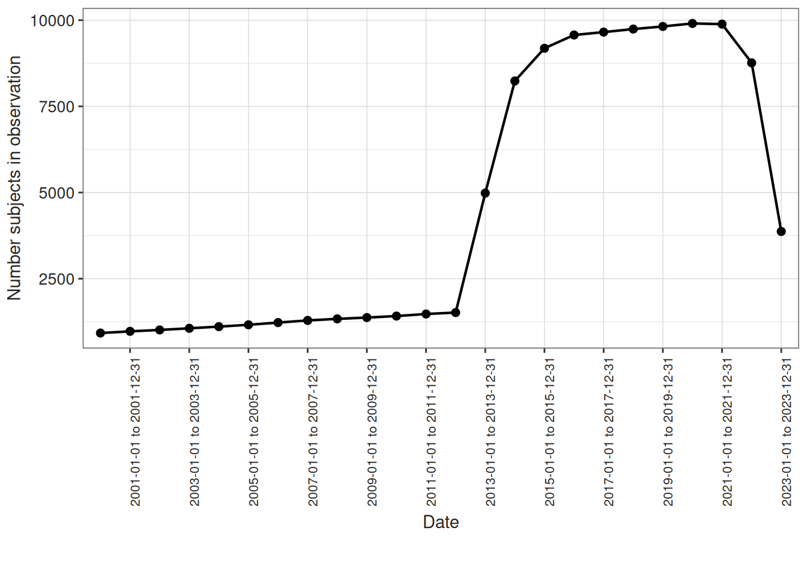
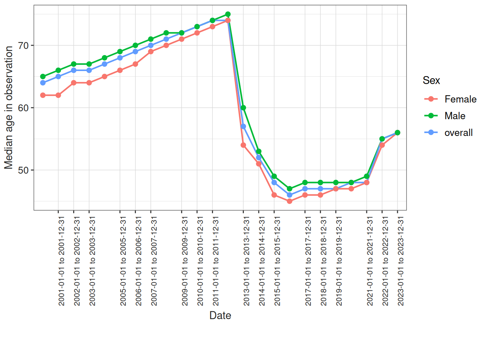

library(dplyr)
library(omock)
library(ggplot2)
library(clock)
library(PatientProfiles)
library(OmopSketch)6 Exploring the OMOP CDM
For this chapter, we’ll use a synthetic COVID-19 dataset ("synthea-covid19-10k") that can be downloaded with the omock package. A characterisation of this dataset to better understand its content can be found in the following Shiny App https://dpa-pde-oxford.shinyapps.io/OmopSketchCharacterisation/.
You can download the dataset using the function downloadMockDataset():
downloadMockDataset(datasetName = "synthea-covid19-10k")
NoteSetup OMOP_DATA_FOLDER
The downloadMockDataset function checks if the database has already been downloaded, and if it is not, it is downloaded in a temporary directory. To avoid downloading the database every time we want to use it, we need to set up the OMOP_DATA_FOLDER. To do that, you need to create an environment variable named OMOP_DATA_FOLDER. You can add it in the R environment file (usethis::edit_r_environ()) or using Sys.setenv(OMOP_DATA_FOLDER = "..."). Either way, OMOP_DATA_FOLDER should point to a folder where the dataset will be downloaded. This way, the dataset will be stored permanently on your computer and you will not have to download it every time you want to use it.
Note that this folder is defined by omopgenerics and is also used by other packages to store OMOP-related data.
Once the dataset is downloaded you can create the cdm reference:
cdm <- mockCdmFromDataset(datasetName = "synthea-covid19-10k", source = "duckdb")cdm── # OMOP CDM reference (duckdb) of synthea-covid19-10k ────────────────────────• omop tables: attribute_definition, care_site, cdm_source, cohort_definition,
concept, concept_ancestor, concept_class, concept_relationship,
concept_synonym, condition_era, condition_occurrence, cost, death,
device_exposure, domain, dose_era, drug_era, drug_exposure, drug_strength,
fact_relationship, location, measurement, metadata, note, note_nlp,
observation, observation_period, payer_plan_period, person,
procedure_occurrence, provider, relationship, source_to_concept_map, specimen,
visit_detail, visit_occurrence, vocabulary• cohort tables: -• achilles tables: -• other tables: -
Note
mockCdmFromDataset()
Note that if you call the function without downloading the database first you will be prompted to download it (or it will be downloaded directly if the session is not interactive).
By default, the mock cdm returns a local dataset that can be inserted in any source of interest using the insertCdmTo() function. Setting the source to source = "duckdb" will return an in-memory DuckDB cdm_reference with two schemas: cdmSchema = “main” and writeSchema = “results”.
6.1 Counting people
The OMOP CDM is person-centric, with the person table containing records to uniquely identify each person in the database. As each row refers to a unique person, we can quickly get a count of the number of individuals in the database like so
cdm$person |>
count()# Source: SQL [?? x 1]
# Database: DuckDB 1.4.1 [unknown@Linux 6.11.0-1018-azure:R 4.4.1//tmp/RtmpvgyAxH/file4135578d0754.duckdb]
n
<dbl>
1 10754The person table also contains some demographic information, including a gender concept for each person. We can easily get a count grouped by this variable. As the concept id is just a number it is more useful to get the concept name, this can be done with a join to the concept table.
cdm$person |>
group_by(gender_concept_id) |>
count() |>
left_join(cdm$concept, by = c("gender_concept_id" = "concept_id")) |>
select("gender_concept_id", "concept_name", "n") |>
collect()# A tibble: 2 × 3
# Groups: gender_concept_id [2]
gender_concept_id concept_name n
<int> <chr> <dbl>
1 8532 FEMALE 5165
2 8507 MALE 5589
TipVocabulary tables
Above we’ve got counts by specific concept IDs recorded in the condition occurrence table. What these IDs represent is described in the concept table. Here we have the name associated with the concept, along with other information such as its domain and vocabulary id.
cdm$concept |>
glimpse()Rows: ??
Columns: 10
Database: DuckDB 1.4.1 [unknown@Linux 6.11.0-1018-azure:R 4.4.1//tmp/RtmpvgyAxH/file4135578d0754.duckdb]
$ concept_id <int> 45756805, 45756804, 45756803, 45756802, 45756801, 457…
$ concept_name <chr> "Pediatric Cardiology", "Pediatric Anesthesiology", "…
$ domain_id <chr> "Provider", "Provider", "Provider", "Provider", "Prov…
$ vocabulary_id <chr> "ABMS", "ABMS", "ABMS", "ABMS", "ABMS", "ABMS", "ABMS…
$ concept_class_id <chr> "Physician Specialty", "Physician Specialty", "Physic…
$ standard_concept <chr> "S", "S", "S", "S", "S", "S", "S", "S", "S", "S", "S"…
$ concept_code <chr> "OMOP4821938", "OMOP4821939", "OMOP4821940", "OMOP482…
$ valid_start_date <date> 1970-01-01, 1970-01-01, 1970-01-01, 1970-01-01, 1970…
$ valid_end_date <date> 2099-12-31, 2099-12-31, 2099-12-31, 2099-12-31, 2099…
$ invalid_reason <chr> NA, NA, NA, NA, NA, NA, NA, NA, NA, NA, NA, NA, NA, N…Other vocabulary tables capture other information about concepts, such as the direct relationships between concepts (the concept relationship table) and hierarchical relationships between (the concept ancestor table).
cdm$concept_relationship |>
glimpse()Rows: ??
Columns: 6
Database: DuckDB 1.4.1 [unknown@Linux 6.11.0-1018-azure:R 4.4.1//tmp/RtmpvgyAxH/file4135578d0754.duckdb]
$ concept_id_1 <int> 35804314, 35804314, 35804314, 35804327, 35804327, 358…
$ concept_id_2 <int> 912065, 42542145, 42542145, 35803584, 42542145, 42542…
$ relationship_id <chr> "Has modality", "Has accepted use", "Is current in", …
$ valid_start_date <date> 2021-01-26, 2019-08-29, 2019-08-29, 2019-05-27, 2019…
$ valid_end_date <date> 2099-12-31, 2099-12-31, 2099-12-31, 2099-12-31, 2099…
$ invalid_reason <chr> NA, NA, NA, NA, NA, NA, NA, NA, NA, NA, NA, NA, NA, N…cdm$concept_ancestor |>
glimpse()Rows: ??
Columns: 4
Database: DuckDB 1.4.1 [unknown@Linux 6.11.0-1018-azure:R 4.4.1//tmp/RtmpvgyAxH/file4135578d0754.duckdb]
$ ancestor_concept_id <int> 375415, 727760, 735979, 438112, 529411, 14196…
$ descendant_concept_id <int> 4335743, 2056453, 41070383, 36566114, 4326940…
$ min_levels_of_separation <int> 4, 1, 3, 2, 3, 3, 4, 3, 2, 5, 1, 3, 4, 2, 2, …
$ max_levels_of_separation <int> 4, 1, 5, 3, 3, 6, 12, 3, 2, 10, 1, 3, 4, 2, 2…More information on the vocabulary tables (as well as other tables in the OMOP CDM version 5.3) can be found at https://ohdsi.github.io/CommonDataModel/cdm53.html#Vocabulary_Tables.
Tip
addConceptName()
The PatientProfiles package has a utility function that helps you to add concept names to a table. By default, any column that ends in concept_id will be used to join to the concept table and add a concept_name column:
cdm$person |>
addConceptName() |>
glimpse()Rows: ??
Columns: 24
Database: DuckDB 1.4.1 [unknown@Linux 6.11.0-1018-azure:R 4.4.1//tmp/RtmpvgyAxH/file4135578d0754.duckdb]
$ person_id <int> 10752, 10754, 10746, 10753, 10745, 10…
$ gender_concept_id <int> 8532, 8507, 8532, 8507, 8532, 8507, 8…
$ year_of_birth <int> 2017, 1942, 2017, 1953, 2010, 1930, 1…
$ month_of_birth <int> 2, 6, 10, 5, 9, 1, 3, 7, 5, 12, 8, 10…
$ day_of_birth <int> 1, 1, 18, 9, 27, 10, 16, 28, 21, 21, …
$ birth_datetime <dttm> 2017-02-01, 1942-06-01, 2017-10-18, …
$ race_concept_id <int> 8527, 8527, 8515, 8527, 8527, 8515, 8…
$ ethnicity_concept_id <int> 38003564, 38003564, 38003564, 3800356…
$ location_id <int> NA, NA, NA, NA, NA, NA, NA, NA, NA, N…
$ provider_id <int> NA, NA, NA, NA, NA, NA, NA, NA, NA, N…
$ care_site_id <int> NA, NA, NA, NA, NA, NA, NA, NA, NA, N…
$ person_source_value <chr> "ffecf9fe-26c1-605c-0ce7-6133f75eb6dc…
$ gender_source_value <chr> "F", "M", "F", "M", "F", "M", "F", "M…
$ gender_source_concept_id <int> 0, 0, 0, 0, 0, 0, 0, 0, 0, 0, 0, 0, 0…
$ race_source_value <chr> "white", "white", "asian", "white", "…
$ race_source_concept_id <int> 0, 0, 0, 0, 0, 0, 0, 0, 0, 0, 0, 0, 0…
$ ethnicity_source_value <chr> "nonhispanic", "nonhispanic", "nonhis…
$ ethnicity_source_concept_id <int> 0, 0, 0, 0, 0, 0, 0, 0, 0, 0, 0, 0, 0…
$ gender_concept_id_name <chr> "FEMALE", "MALE", "FEMALE", "MALE", "…
$ race_concept_id_name <chr> "White", "White", "Asian", "White", "…
$ ethnicity_concept_id_name <chr> "Not Hispanic or Latino", "Not Hispan…
$ gender_source_concept_id_name <chr> "No matching concept", "No matching c…
$ race_source_concept_id_name <chr> "No matching concept", "No matching c…
$ ethnicity_source_concept_id_name <chr> "No matching concept", "No matching c…Note you can edit the arguments to only use one desired column or edit the concept name column.
cdm$person |>
addConceptName(column = "gender_concept_id", nameStyle = "sex") |>
glimpse()Rows: ??
Columns: 19
Database: DuckDB 1.4.1 [unknown@Linux 6.11.0-1018-azure:R 4.4.1//tmp/RtmpvgyAxH/file4135578d0754.duckdb]
$ person_id <int> 10752, 10754, 10746, 10753, 10745, 10751, …
$ gender_concept_id <int> 8532, 8507, 8532, 8507, 8532, 8507, 8532, …
$ year_of_birth <int> 2017, 1942, 2017, 1953, 2010, 1930, 1970, …
$ month_of_birth <int> 2, 6, 10, 5, 9, 1, 3, 7, 5, 12, 8, 10, 5, …
$ day_of_birth <int> 1, 1, 18, 9, 27, 10, 16, 28, 21, 21, 20, 1…
$ birth_datetime <dttm> 2017-02-01, 1942-06-01, 2017-10-18, 1953-…
$ race_concept_id <int> 8527, 8527, 8515, 8527, 8527, 8515, 8527, …
$ ethnicity_concept_id <int> 38003564, 38003564, 38003564, 38003564, 38…
$ location_id <int> NA, NA, NA, NA, NA, NA, NA, NA, NA, NA, NA…
$ provider_id <int> NA, NA, NA, NA, NA, NA, NA, NA, NA, NA, NA…
$ care_site_id <int> NA, NA, NA, NA, NA, NA, NA, NA, NA, NA, NA…
$ person_source_value <chr> "ffecf9fe-26c1-605c-0ce7-6133f75eb6dc", "f…
$ gender_source_value <chr> "F", "M", "F", "M", "F", "M", "F", "M", "F…
$ gender_source_concept_id <int> 0, 0, 0, 0, 0, 0, 0, 0, 0, 0, 0, 0, 0, 0, …
$ race_source_value <chr> "white", "white", "asian", "white", "white…
$ race_source_concept_id <int> 0, 0, 0, 0, 0, 0, 0, 0, 0, 0, 0, 0, 0, 0, …
$ ethnicity_source_value <chr> "nonhispanic", "nonhispanic", "nonhispanic…
$ ethnicity_source_concept_id <int> 0, 0, 0, 0, 0, 0, 0, 0, 0, 0, 0, 0, 0, 0, …
$ sex <chr> "FEMALE", "MALE", "FEMALE", "MALE", "FEMAL…6.2 Summarising observation periods
The observation period table contains records indicating spans of time over which clinical events can be reliably observed for the people in the person table (see formal definition). Someone can potentially have multiple observation periods. So, say we wanted a count of people grouped by the year during which their first observation period started.
To do this first we would need to get the first observation period per person:
first_observation_period <- cdm$observation_period |>
group_by(person_id) |>
arrange(observation_period_start_date) |>
filter(row_number() == 1) |>
compute()Now we can add this to the person table to make sure that all individuals defined in the observation period table are also defined the person table. Later we can extract the observation_period_start_year and count the number of records associated in each year:
first_records_per_year <- cdm$person |>
left_join(first_observation_period, by = "person_id") |>
mutate(observation_period_start_year = get_year(observation_period_start_date)) |>
group_by(observation_period_start_year) |>
count() |>
collect()Finally we can plot the counts with ggplot2.
ggplot(first_records_per_year) +
geom_col(mapping = aes(x = observation_period_start_year, y = n)) +
theme_bw()
6.3 Summarising clinical records
What’s the number of condition occurrence records per person in the database? We can find this out like so
number_condition_occurrence_records <- cdm$person |>
left_join(
cdm$condition_occurrence |>
group_by(person_id) |>
count(name = "condition_occurrence_records"),
by = "person_id"
) |>
mutate(
condition_occurrence_records =
coalesce(condition_occurrence_records, 0)
) |>
group_by(condition_occurrence_records) |>
count() |>
collect()
ggplot(number_condition_occurrence_records) +
geom_col(mapping = aes(
x = condition_occurrence_records,
y = n
)) +
theme_bw()
How about we were interested in getting record counts for some specific concepts related to Covid-19 symptoms?
codes <- c(
437663, 437390, 31967, 4289517, 4223659,
312437, 434490, 254761, 77074
)
symptoms_records <- cdm$condition_occurrence |>
filter(condition_concept_id %in% codes) |>
group_by(condition_concept_id) |>
count() |>
addConceptName(
column = "condition_concept_id",
nameStyle = "concept_name"
) |>
collect()
ggplot(symptoms_records) +
geom_col(mapping = aes(x = concept_name, y = n)) +
theme_bw() +
xlab("")
We can also use summarise for various other calculations
cdm$person |>
summarise(
min_year_of_birth = min(year_of_birth, na.rm = TRUE),
q05_year_of_birth = quantile(year_of_birth, 0.05, na.rm = TRUE),
mean_year_of_birth = round(mean(year_of_birth, na.rm = TRUE), 0),
median_year_of_birth = median(year_of_birth, na.rm = TRUE),
q95_year_of_birth = quantile(year_of_birth, 0.95, na.rm = TRUE),
max_year_of_birth = max(year_of_birth, na.rm = TRUE)
) |>
glimpse()Rows: ??
Columns: 6
Database: DuckDB 1.4.1 [unknown@Linux 6.11.0-1018-azure:R 4.4.1//tmp/RtmpvgyAxH/file4135578d0754.duckdb]
$ min_year_of_birth <int> 1923
$ q05_year_of_birth <dbl> 1927
$ mean_year_of_birth <dbl> 1971
$ median_year_of_birth <dbl> 1970
$ q95_year_of_birth <dbl> 2018
$ max_year_of_birth <int> 2023As we’ve seen before, we can also quickly get results for various groupings or restrictions
grouped_summary <- cdm$person |>
group_by(gender_concept_id) |>
summarise(
min_year_of_birth = min(year_of_birth, na.rm = TRUE),
q25_year_of_birth = quantile(year_of_birth, 0.25, na.rm = TRUE),
median_year_of_birth = median(year_of_birth, na.rm = TRUE),
q75_year_of_birth = quantile(year_of_birth, 0.75, na.rm = TRUE),
max_year_of_birth = max(year_of_birth, na.rm = TRUE)
) |>
left_join(cdm$concept, by = c("gender_concept_id" = "concept_id")) |>
collect()
grouped_summary |>
ggplot(mapping = aes(
x = concept_name,
group = concept_name,
fill = concept_name
)) +
geom_boxplot(
mapping = aes(
lower = q25_year_of_birth,
upper = q75_year_of_birth,
middle = median_year_of_birth,
ymin = min_year_of_birth,
ymax = max_year_of_birth
),
stat = "identity", width = 0.5
) +
theme_bw() +
theme(legend.position = "none") +
xlab("")
6.4 The OmopSketch package
The OmopSketch R package aims to characterise and visualise data held in an OMOP CDM instance to help us asses if the data can be used to answer a specific clinical research question. Saving us the need to write custom queries like those above, the package contains various data characterisation functions. For example, we can use it to quickly summarise and visualise the observation period table:
result <- summariseObservationPeriod(cdm$observation_period)
tableObservationPeriod(result = result)| Observation period ordinal | Variable name | Estimate name |
CDM name
|
|---|---|---|---|
| synthea-covid19-10k | |||
| all | Number records | N | 10,754 |
| Number subjects | N | 10,754 | |
| Records per person | mean (sd) | 1.00 (0.00) | |
| median [Q25 - Q75] | 1 [1 - 1] | ||
| Duration in days | mean (sd) | 3,958.53 (3,430.29) | |
| median [Q25 - Q75] | 3,326 [2,927 - 3,340] | ||
| 1st | Number subjects | N | 10,754 |
| Duration in days | mean (sd) | 3,958.53 (3,430.29) | |
| median [Q25 - Q75] | 3,326 [2,927 - 3,340] |
With this table we can see that only one observation period is defined by person and that individuals have a median follow up of ~ 9 years.
We can also visualise how many individuals are in observation per year:
result <- summariseInObservation(
cdm$observation_period,
interval = "years",
output = "person",
dateRange = c("2000-01-01", "2023-12-31")
)
plotInObservation(result = result) +
ylim(0, NA)
Or even the median age of the individuals in observation stratified by sex:
result <- summariseInObservation(
cdm$observation_period,
interval = "years",
output = "age",
sex = TRUE,
dateRange = c("2000-01-01", "2023-12-31")
)
plotInObservation(result = result, colour = "sex")
The package also provides functions to characterise the clinical tables to show percentage of records in observation, domains recorded or the source vocabularies:
result <- summariseClinicalRecords(cdm = cdm, omopTableName = "drug_exposure")
tableClinicalRecords(result = result)| Variable name | Variable level | Estimate name |
Database name
|
|---|---|---|---|
| synthea-covid19-10k | |||
| drug_exposure | |||
| Number records | - | N | 337,509 |
| Number subjects | - | N (%) | 10,754 (100.00%) |
| Records per person | - | Mean (SD) | 31.38 (45.63) |
| Median [Q25 - Q75] | 22 [13 - 33] | ||
| Range [min to max] | [1 to 1,152] | ||
| In observation | Yes | N (%) | 337,509 (100.00%) |
| Domain | Drug | N (%) | 337,509 (100.00%) |
| Source vocabulary | Cvx | N (%) | 310,584 (92.02%) |
| Rxnorm | N (%) | 26,925 (7.98%) | |
| Standard concept | S | N (%) | 337,509 (100.00%) |
| Type concept id | Pharmacy claim | N (%) | 337,509 (100.00%) |
TipData overview
When you start working with a dataset it is probably a good idea to get an overall summary of the data contained within it. To do this you can use OmopSketch to produce a broad summary of the data:
result <- databaseCharacteristics(cdm = cdm)Note running the above line of code can take several hours or even days depending on the size of the database. Once you have the results you can visualise all of them within a Shiny App such as the one shown at the beginning of this chapter.
shinyCharacteristics(result = result, directory = getwd())6.5 Disconnecting
Once we have finished our analysis we can close our connection to the database behind our cdm reference.
cdmDisconnect(cdm)6.6 Further reading
- Alcalde-Herraiz M, Lopez-Guell K, Rowlands E, Campanile C, Burn E, Català M (2025). OmopSketch: Characterise Tables of an OMOP Common Data Model Instance. R package version 0.5.1, https://OHDSI.github.io/OmopSketch/.